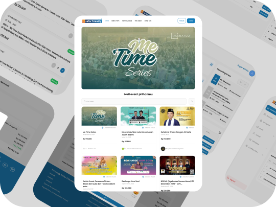
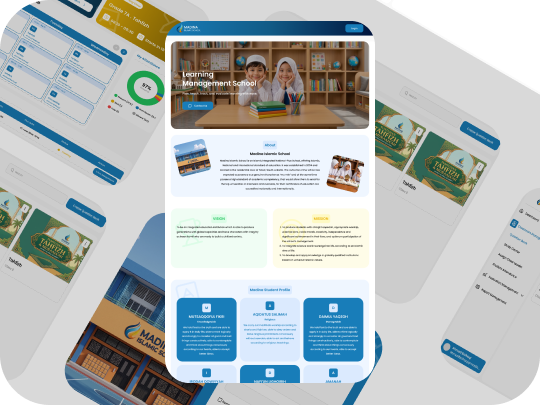
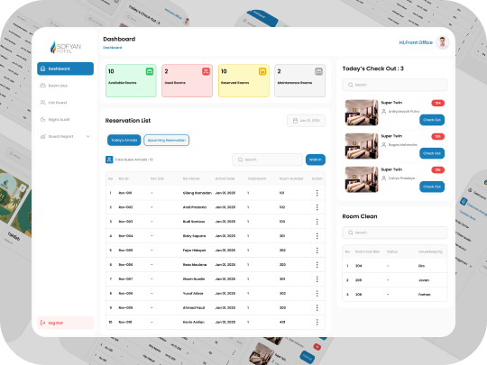
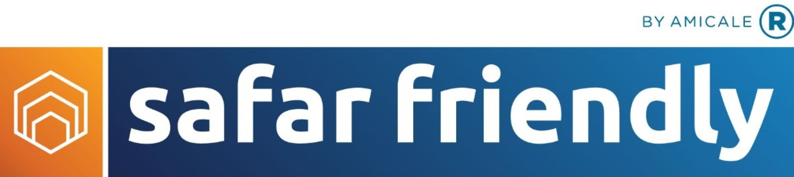
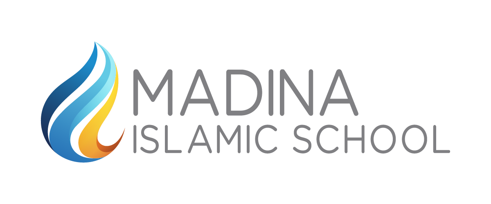
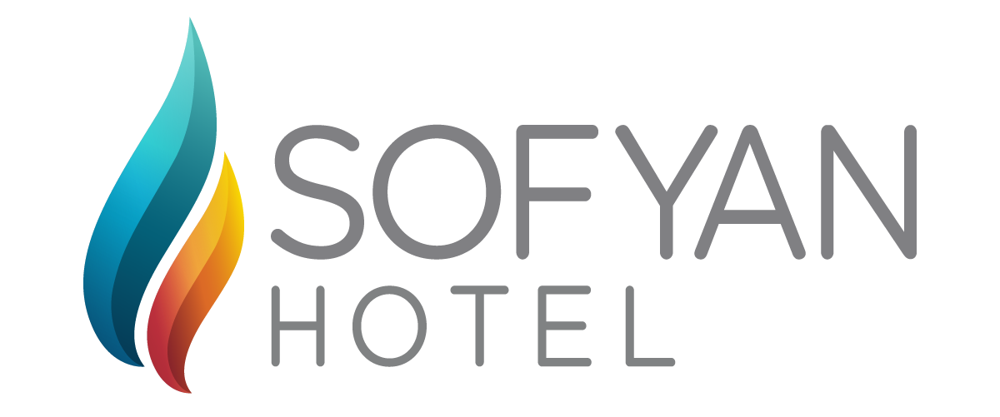
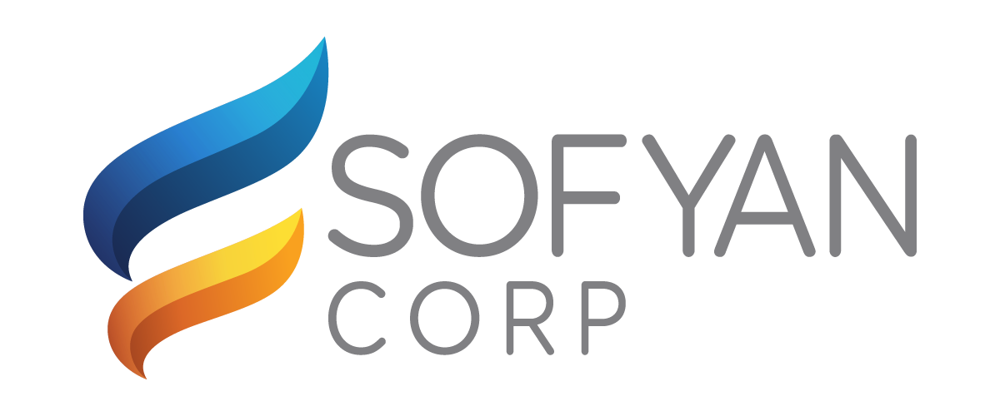

Safar Friendly
March - November 2024
A Muslim Event Ticketing Platform That Connects Attendees And Event Organizers In One Digital Ecosystem, From Ticket Purchasing To Event Management.
View PortfolioUI/UX Designer
Designing Scalable Web & Mobile Apps Across Hospitality, EdTech, And Event Tech
A collection of UI/UX projects I’ve worked on, focusing on creating user-centered solutions that make a real impact

March - November 2024
A Muslim Event Ticketing Platform That Connects Attendees And Event Organizers In One Digital Ecosystem, From Ticket Purchasing To Event Management.
View Portfolio
December 2024 - May 2025
An Educational Platform That Connects Teachers, Students, And Parents In One Digital Ecosystem To Support The Learning Process, From Learning Materials And Exercises To Exams And Report Card Management.
View Portfolio
June 2025 - December 2025
A Hotel Management Platform That Helps Front Office And Housekeeping Teams Manage Hotel Operations, From Reservations And Check-Ins To Room Status, Cleaning, And Maintenance.
View PortfolioA selection of brands and products I’ve helped shape through research, interface design, and scalable design systems.

Safar Friendly
Madina Islamic School
Sofyan Hotel
Sofyan CorpI turn ideas into intuitive and impactful digital experiences through research, design, and testing
Understand User Needs, Analyze Behaviour, And Map Clear User Flows To Solve Real Problems
Design Clean Interfaces, Build Interactive Prototypes, And Turn Ideas Into Testable Products
Test With Real Users, Refine The Experience, And Build Consistent Design Systems That Scale
A simple, structured process to create better products, from research to real impact
Understand The Problem, Users And Business Goals Through Research And Analysis
Synthesize Insights, Identify Key Problems, And Set Clear Objectives
Ideate Wireframes Or UI, And Build Interactive Prototypes
Test With Real Users, Iterate, And Refine For The Best Experience